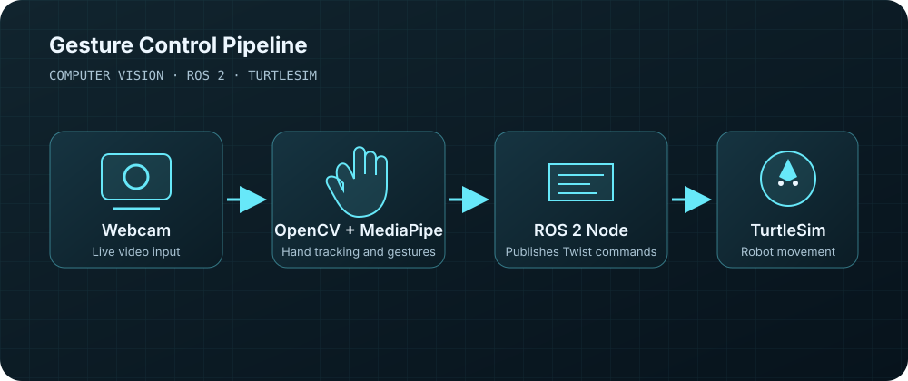

Project Overview_
This project uses a webcam and computer vision to detect hand movements and control a TurtleSim robot without a keyboard. OpenCV processes the camera image, MediaPipe detects the hand, and recognized gestures are converted into velocity commands published through ROS 2.

Webcam → Hand tracking → ROS 2 velocity commands → TurtleSim
Key Features_
- Real-time hand detection using MediaPipe
- Image processing and gesture recognition using OpenCV
- ROS 2 publisher integration
- Robot movement controlled through geometry_msgs/msg/Twist
- Velocity commands published to /turtle1/cmd_vel
- Hands-free control of the TurtleSim robot
Tech Stack_
- Ubuntu 22.04
- ROS 2 Humble
- Python
- OpenCV
- MediaPipe
- NumPy
- TurtleSim
- geometry_msgs/Twist